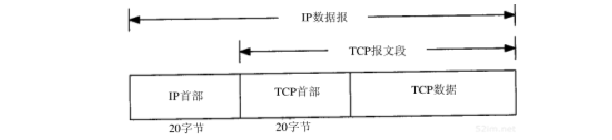
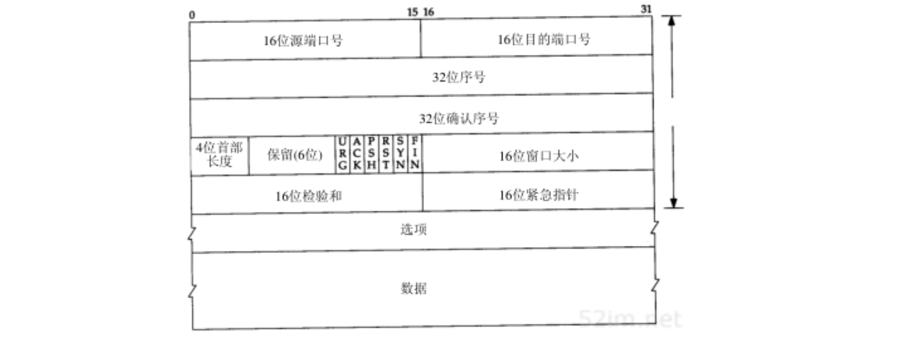

TCP：传输控制协议
Table of Contents
本章将介绍TCP为应用层提供的服务，以及TCP首部中的各个字段。随后的几章在了解TCP的工作过程中将对这些字段作详细介绍：
- 描述如何建立和终止一个TCP连接
- 了解正常的数据传输过程：
- 交互使用（远程登录）
- 批量数据传送（文件传输）
- 提供TCP超时及重传的技术细节
- 介绍两种其他的定时器
- 概述TCP新的特性以及TCP的性能
TCP 协议
服务
尽管TCP和UDP都使用相同的网络层( IP )，TCP却向应用层提供与UDP完全不同的服务。TCP提供一种面向连接的、可靠的字节流服务
面向连接
面向连接意味着两个使用TCP的应用（通常是一个客户和一个服务器）在彼此交换数据之前必须先建立一个TCP连接。这一过程与打电话很相似，先拨号振铃，等待对方摘机说“喂”，然后才说明是谁
在一个TCP连接中，仅有两方进行彼此通信。以前介绍的 广播和多播不能用于TCP
可靠性
TCP通过下列方式来提供可靠性：
- 应用数据被分割成TCP认为最适合发送的数据块。这和UDP完全不同，应用程序产生的数据报长度将保持不变。由TCP传递给IP的信息单位称为报文段或段( segement )
- 当TCP发出一个段后，它启动一个定时器，等待目的端确认收到这个报文段。如果不能及时收到一个确认，将重发这个报文段
- 当TCP收到发自TCP连接另一端的数据，它将发送一个确认。这个确认不是立即发送，通常将 推迟几分之一秒
- TCP将保持它首部和数据的检验和。这是一个端到端的检验和，目的是检测数据在传输过程中的任何变化。如果收到段的检验和有差错，TCP将丢弃这个报文段和不确认收到此报文段（希望发端超时并重发）
- 既然TCP报文段作为IP数据报来传输，而IP数据报的到达可能会失序，因此TCP报文段的到达也可能会失序。 如果必要，TCP将对收到的数据进行重新排序，将收到的数据以正确的顺序交给应用层
- 既然IP数据报会发生重复， TCP的接收端必须丢弃重复的数据
- TCP还能 提供流量控制 。TCP连接的每一方都有固定大小的缓冲空间，TCP的接收端只允许另一端发送接收端缓冲区所能接纳的数据。这将防止较快主机致使较慢主机的缓冲区溢出
字节流
两个应用程序通过TCP连接交换8bit字节构成的字节流。TCP不在字节流中插入记录标识符。我们将这称为字节流服务。如果一方的应用程序先传10字节，又传20字节，再传50字节，连接的另一方将无法了解发方每次发送了多少字节。收方可以分4次接收这80个字节，每次接收20字节。一端将字节流放到TCP连接上，同样的字节流将出现在TCP连接的另一端。
TCP对字节流的内容不作任何解释。TCP不知道传输的数据字节流是二进制数据，还是ASCII字符、EBCDIC字符或者其他类型数据。对字节流的解释由TCP连接双方的应用层解释
这种对字节流的处理方式与Unix操作系统对文件的处理方式很相似 Unix的内核对一个应用读或写的内容不作任何解释，而是交给应用程序处理 对Unix的内核来说，它无法区分一个二进制文件与一个文本文件
首部
TCP数据被封装在一个IP数据报中，如图17-1所示：

图17-2显示TCP首部的数据格式。如果不计 选项 字段，它通常是20个字节：

端口号字段
每个TCP段都包含 源端和目的端的端口号 ，用于寻找发端和收端应用进程。这两个值加上 IP首部中的源端IP地址和目的端IP地址 唯一确定一个TCP连接
有时，一个IP地址和一个端口号也称为一个socket。这个术语出现在最早的TCP规范(RFC793)中，后来它也作为表示伯克利版的编程接口。插口对包含客户IP地址、客户端口号、服务器IP地址和服务器端口号的四元组可唯一确定互联网络中每个TCP连接的双方
序号字段
序号用来 标识从TCP发端向TCP收端发送的数据字节流 ，它表示在这个报文段中的的第一个数据字节。如果将字节流看作在两个应用程序间的单向流动，则 TCP用序号对每个字节进行计数
序号是32bit的无符号数，序号到达2^32-1后又从0开始
当建立一个新的连接时，SYN标志变1
序号字段包含由这个主机选择的该连接的初始序号ISN
该主机要发送数据的第一个字节序号为这个ISN加1，因为SYN标志消耗了一个序号
确认序号字段
既然每个传输的字节都被计数，确认序号包含发送确认的一端所期望收到的下一个序号。因此， 确认序号应当是上次已成功收到数据字节序号加1
只有ACK标志为1时确认序号字段才有效
发送ACK无需任何代价，因为32bit的确认序号字段和ACK标志一样，总是TCP首部的一部分。
因此一旦一个连接建立起来，这个字段总是被设置，ACK标志也总是被设置为1
TCP为应用层提供全双工服务。这意味数据能在两个方向上独立地进行传输。因此，连接的每一端必须保持每个方向上的传输数据序号
首部长度
首部长度给出首部中32bit字的数目：
需要这个值是因为任选字段的长度是可变的
这个字段占4bit，因此TCP最多有60字节的首部
没有任选字段，正常的长度是20字节
标志位字段
在TCP首部中有6个标志比特。它们中的多个可同时被设置为1：
| 标志位 | 描述 |
| URG | 紧急指针有效 |
| ACK | 确认序号有效 |
| PSH | 接收方应该尽快把这个报文段发给应用层 |
| RST | 重建连接 |
| SYN | 同步序号用来建立连接 |
| FIN | 发送端完成任务 |
紧急方式
只有当URG标志置1时紧急指针才有效。紧急指针是一个正的偏移量，和序号字段中的值相加表示紧急数据最后一个字节的序号
TCP的紧急方式是发送端向另一端发送紧急数据的一种方式
窗口大小字段
TCP的流量控制由 连接的每一端通过声明的窗口大小 来提供。窗口大小为字节数，起始于确认序号字段指明的值，这个值是 接收端正期望接收的字节
窗口大小是一个16 bit字段，因而窗口大小最大为65535字节
滑动窗口
TCP可以表述为 一个没有选择确认或否认的滑动窗口协议 ：
- 缺少选择确认是因为TCP首部中的确认序号表示发方已成功收到字节，但还不包含确认序号所指的字节，当前还无法对数据流中选定的部分进行确认：
例如，如果1～1024字节已经成功收到，下一报文段中包含序号从2049～3072的字节 然而收端并不能确认这个新的报文段，它所能做的就是发回一个确认序号为1025的ACK
- 同样也无法对一个报文段进行否认：
例如，如果收到包含1025～2048字节的报文段，但它的检验和错，TCP接收端所能做的就是发回一个确认序号为1025的ACK
检验和字段
检验和覆盖了整个的TCP报文段：TCP首部和TCP数据。这是一个强制性的字段，一定是由发端计算和存储，并由收端进行验证
TCP检验和的计算和UDP检验和的计算相似，使用如前所述的一个伪首部
选项字段
最常见的可选字段是 最长报文大小 ，又称为MSS。每个连接方通常都在通信的第一个报文段（为建立连接而设置SYN标志的那个段）中指明这个选项。它指明本端所能接收的最大长度的报文段
同样TCP报文段中的数据部分是可选的：
- 一个连接建立和一个连接终止时，双方交换的报文段仅有TCP首部。如果一方没有数据要发送，也使用没有任何数据的首部来确认收到的数据
- 在处理超时的许多情况中，也会发送不带任何数据的报文段